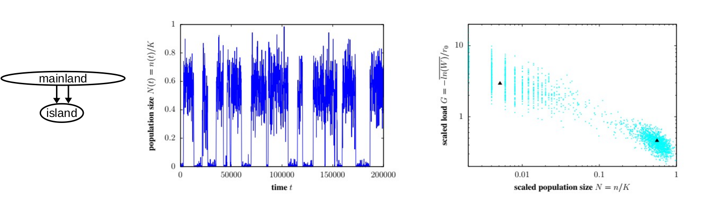

Research
We are broadly interested in how patterns of genetic variation — across space and in time — are shaped by population structure, demography and polygenic selection. Specific research interests include:Barriers to Gene Flow and Speciation
We are interested in the processes and genes that contribute to the breakdown of hybridisation and gene flow during speciation. Specifically, we use models to understand how selection acting on multiple genes influences genetic and phenotypic differences between speciating populations, and the extent to which patterns in genomic data can provide information about the mechanisms and genes involved in speciation. A key question here is: (when) do individual genes matter? Conversely, when does divergence between populations depend only on a feweffectiveor composite parameters that capture the combined effect of many different barriers to gene flow? By identifying the parameters and genetic details that can(not) be inferred from data, we hope to gain a better understanding of the limits of genomic inference. More on this here , here, here , and here. .
Linkage between genes and the response to selection
Quantitative genetics, which is the classical framework for describing short-term evolution, assumes that traits are influenced by many small-effect genetic variants that are unlinked, i.e., inherited independently of each other. However, in most organisms, genes are physically linked across a small number of chromosomes, with large chunks of chromosome passed on intact from parent to offspring. We are interested in understanding the consequences of such linkage for the response to selection. A key question here is: does selection 'see' individual genetic variants or only large blocks of genome containing many such (beneficial and deleterious) variants. Furthermore, can we identify selected blocks in genomic data, and what can we learn from them about the strength and targets of selection? More on this here and here.Eco-evolutionary feedback and population extinction
Most models of evolutionary change assume that the size of evolving populations is constant or determined by demographic processes, independently of the genetics of the population. However, this assumption breaks down in small or fragmented populations, which tend to accumulate harmful mutations at a higher rate, which reduces population fitness and size, which further accelerates the accumulation of harmful variants. This can result in a positive feedback betweeen declining population sizes and increasing genetic load that may eventually lead to population extinction. We aim to better understand such eco-evolutionary feedback using more realistic models that account for both genetic and demographic fluctations as well as realistic (polygenic) architectures of fitness variation. The larger goal is to quantitatively characterise the conditions for the extinction of fragmented populations across a wide range of scenarios, including both inbreeding and environmental maladaptation. More on this here, here, and here .  In addition, we are starting various projects that focus on the genomic signatures of polygenic selection in spatially continuous populations, with the aim of better understanding if/how different evolutionary processes can be distinguished in genomic data. More information here.